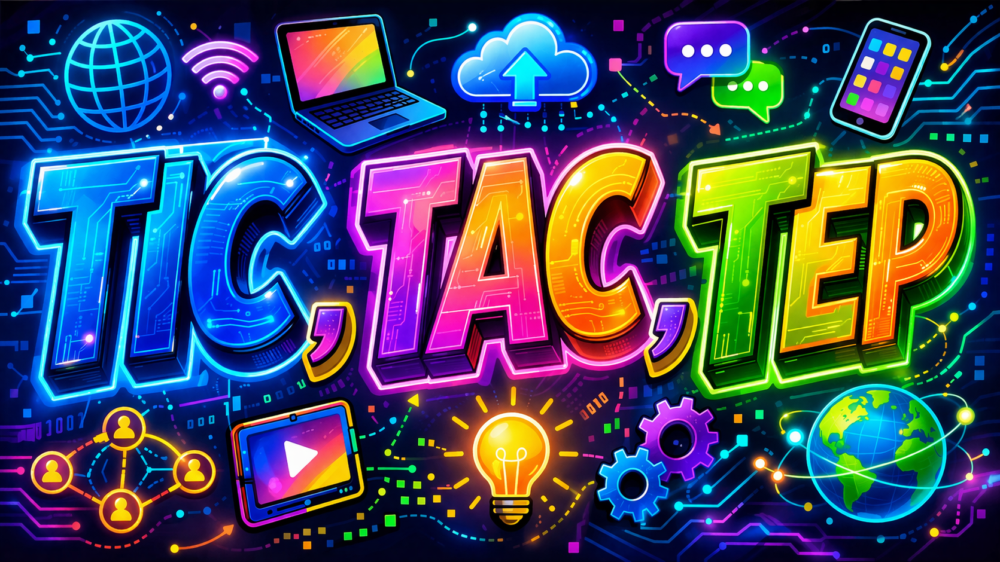

Que son las Tic?
Las Tecnologías de la Información y la Comunicación (TIC) abarcan un conjunto de herramientas digitales que permiten gestionar, procesar y transmitir información como: voz, datos, texto, video e imágenes
Ventajas
- Acceso rápido a la información: Permiten encontrar información de manera inmediata desde cualquier lugar.
- Mejora del aprendizaje: Facilitan una educación más interactiva y dinámica.
- Comunicación eficiente: Permiten comunicación rápida entre estudiantes y docentes (correo, videollamadas).
- Flexibilidad educativa: Posibilitan estudiar en línea desde cualquier lugar y horario.
- Desarrollo de habilidades digitales: Preparan a los estudiantes para el mundo tecnológico actual.
- Trabajo colaborativo: Facilitan el trabajo en equipo mediante herramientas digitales.
Herramientas y Medios

Las TIC (Tecnologías de la Información y la Comunicación) son la base; las TAC (Tecnologías del Aprendizaje y Conocimiento) las usan para mejorar el proceso didáctico; y las TEP (Tecnologías para el Empoderamiento y la Participación).
TAC
Las Tecnologías del Aprendizaje y el Conocimiento (TAC) son herramientas digitales utilizadas con un enfoque educativo, que permiten mejorar el proceso de enseñanza-aprendizaje, promoviendo la comprensión, la creatividad y el desarrollo de habilidades en los estudiantes.
Las TAC incluyen aplicaciones y programas educativos que permiten aprender de forma interactiva, crear contenido digital y mejorar la enseñanza mediante el uso de la tecnología.
TAC (Tecnologías del Aprendizaje y el Conocimiento)
- Kahoot
- Quizizz
- Canva
- Genially
TEP
Las TEP son herramientas digitales que fomentan la participación, la colaboración y el empoderamiento de las personas, permitiéndoles crear, compartir ideas y generar impacto en la sociedad.
“Las TEP convierten a los usuarios en protagonistas activos, capaces de participar, crear y transformar su entorno.
TEP (Tecnologías para el Empoderamiento y la Participación)
- TikTok
- Padlet
- Blogger